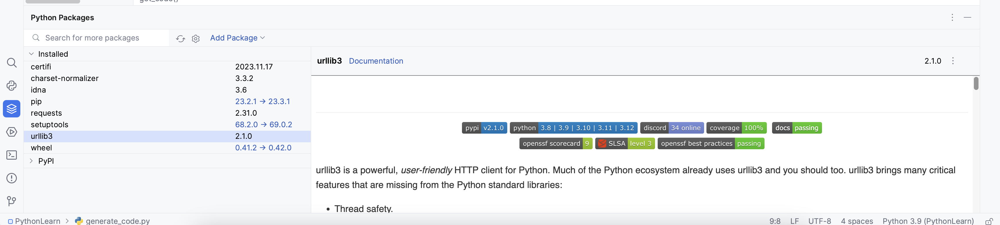

摘要
本文主要记录零碎python学习中遇到的一些知识点
pip基础
pip基础命令如下：
1 | install Install packages. |
总之，对于
pip命令有不了解的地方，建议通过运行pip help来查看。
可以通过pip install 批量安装package，命令如下：
1 | pip install -r requirements.txt |
requirements.txt文件格式：package_name==package_version，示例如下：
1 | astroid==2.0.4 |
Python错误
TypeError: ‘module’ object is not callable
1 | # Pepole.py |
上面的代码运行时就会报TypeError: 'module' object is not callable错误，原因是，通过import People这种方式引入报，在调用内容是，需要加上相应module的前缀，即上面代码改成如下就可以正常运行了：
1 | import Pepole |
或者
1 | from People import Pepole |
这设计到Python 两种 module 导入方式：
import module，调用时需要加上module限定
from module import，调用时不需要加module限定
OSError: [Errno 9] Bad file descriptor
遇到这种错误的原因可能是多样的，在使用socket时，如果在调用socket.close
PyCharm编辑器相关
注意：当前使用的是PyCharm 2023.2.2 (Professional Edition)
Live Template
代码模版使用，快捷键，
cmd+,，然后搜索Live Template，即可设置动态代码提示，如 输入main，就可以直接选择live template后就可以直接输出如下内容了：1
if __name__ == "__main__":
Python packages
查看当前项目所用到的外部依赖包，具体图片如下：

窗口包含如下信息：
当前项目已经安装的包；
点击具体的包，可以看到升级信息，以及包对应的文档
上方的输入框可以关键字搜索PyPI 上已经存在的可用的包，十分方便；
编辑器显示空白
有时候需要查看文件中的空白（包括空格、空行、制表符等），这个时候可以通过Settings->Apperance->Show whitespaces，勾选即可显示